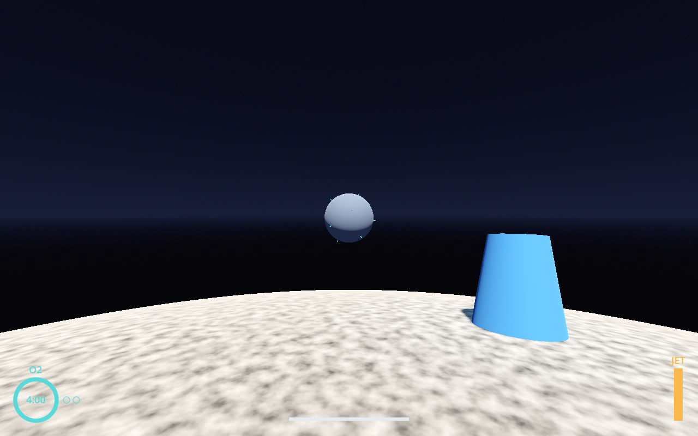
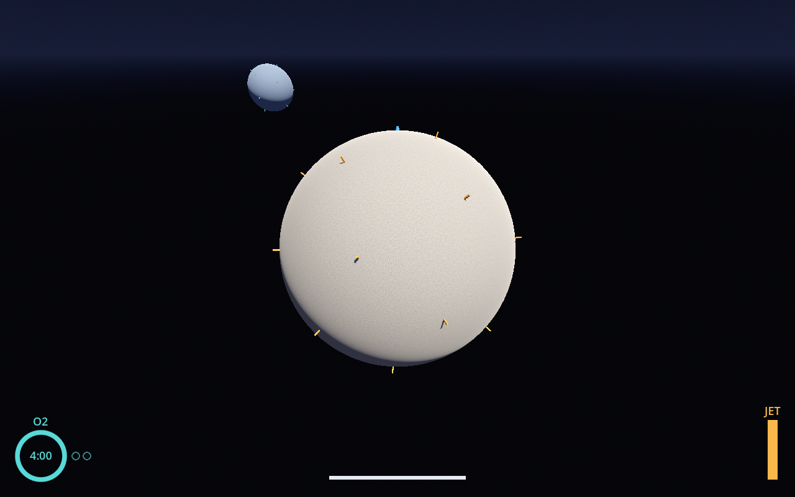
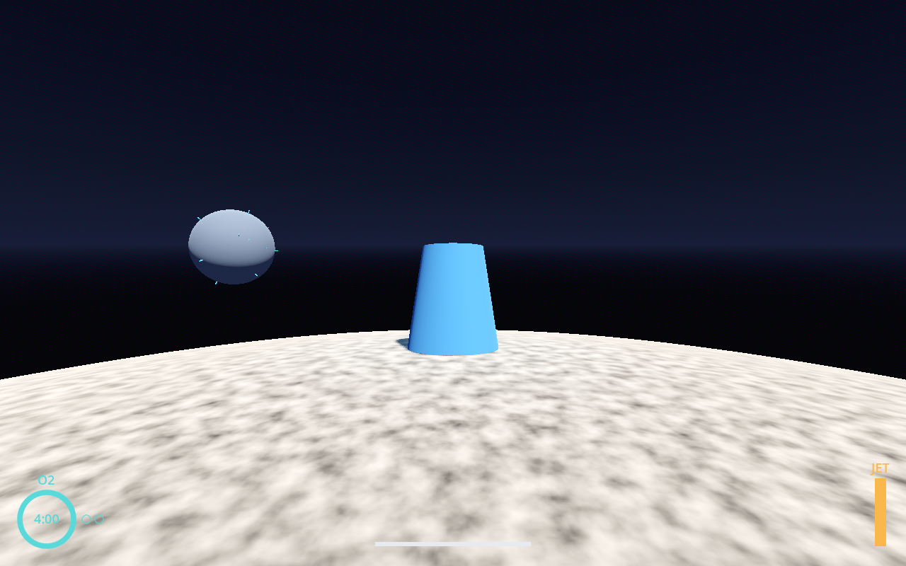
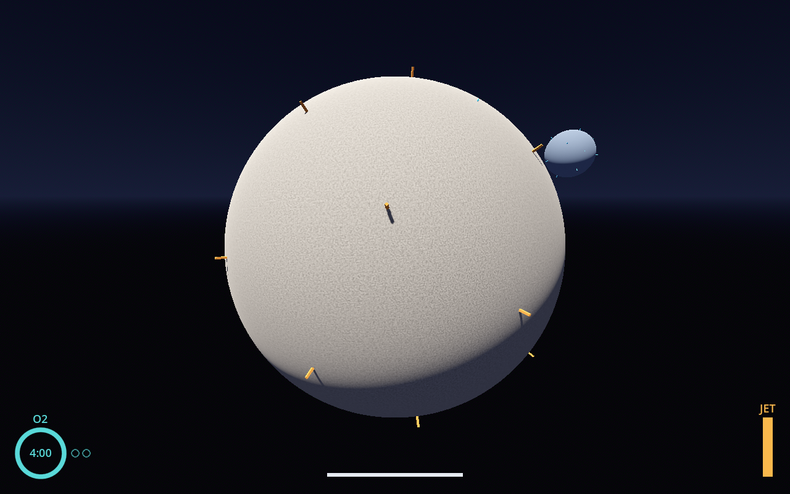
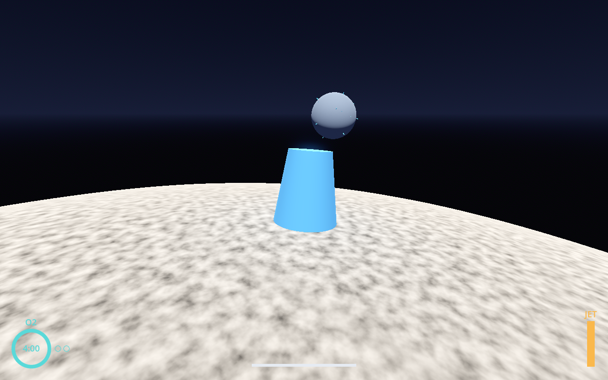

11 gates: 6 passed, 0 failed, 5 not run.
| Gate | Result | Detail |
|---|---|---|
| Rust unit tests | PASS | 74 passed, 0 failed |
| Determinism tests | PASS | 13 passed, 0 failed |
| Data-file validation | PASS | 10 passed, 0 failed |
| Smoke test | PASS | seed 7K3M-Q9TD, 60 s wanderer bot, no detector hits, no log errors |
| Feature test scenes | PASS | 2 scripts passed (16 named checks), no log errors |
| Input replay determinism | PASS | replayed in real time; ended 0.0 m from the recording |
| Screenshot regression | NOT RUN | no approved baselines yet; 5 new screenshots await Matthew's approval |
| Autoplay bots (50 seeds x 5 profiles) | NOT RUN | the systems these need arrive in later phases |
| Balance simulator | NOT RUN | the systems these need arrive in later phases |
| Fun proxies | NOT RUN | the systems these need arrive in later phases |
| Steam Deck session and rubric | NOT RUN | needs Matthew's Deck |
| Kind | replay |
|---|---|
| Seed | 7K3M-Q9TD |
| Result | PASS |
| Game time | 60.0 s |
| Replay drift | 0.0000 m |
| Detector hits | 0 |
| Frame times | Headless run: no rendering, so no frame times are reported. |
| Log | 0 errors, 0 warnings (0 known machine-only lines ignored) |
| Kind | screenshots |
|---|---|
| Seed | 7K3M-Q9TD |
| Result | PASS |
| Game time | 16.0 s |
| Detector hits | 0 |
| Frame times (this machine, not a Deck) | avg 127.13 ms, worst 1% 149.59 ms, max 150.00 ms |
| Log | 0 errors, 0 warnings (0 known machine-only lines ignored) |
| Kind | smoke |
|---|---|
| Seed | 7K3M-Q9TD |
| Result | PASS |
| Game time | 60.0 s |
| Detector hits | 0 |
| Frame times | Headless run: no rendering, so no frame times are reported. |
| Log | 0 errors, 0 warnings (0 known machine-only lines ignored) |
SSIM threshold 0.98. New baselines are approved by Matthew only.





Not measured: no Deck frame-time log in this run. Copy frametime_log.csv from the Deck into the run folder as deck_frametime_log.csv.